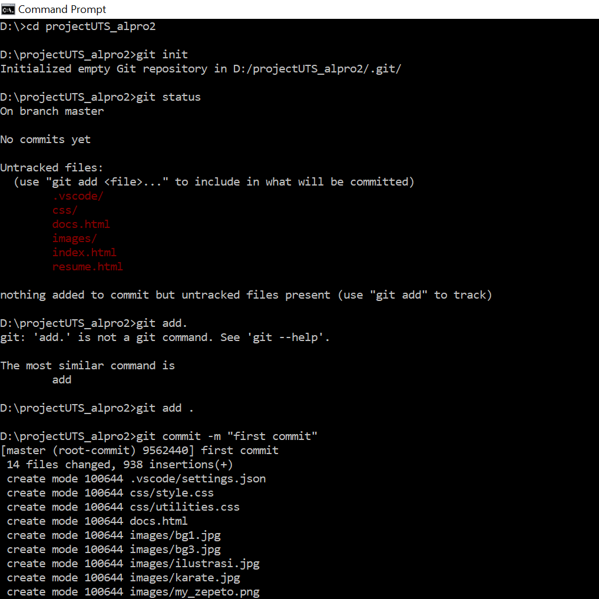
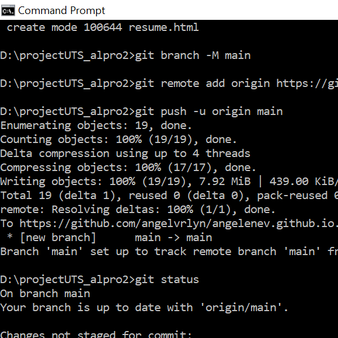
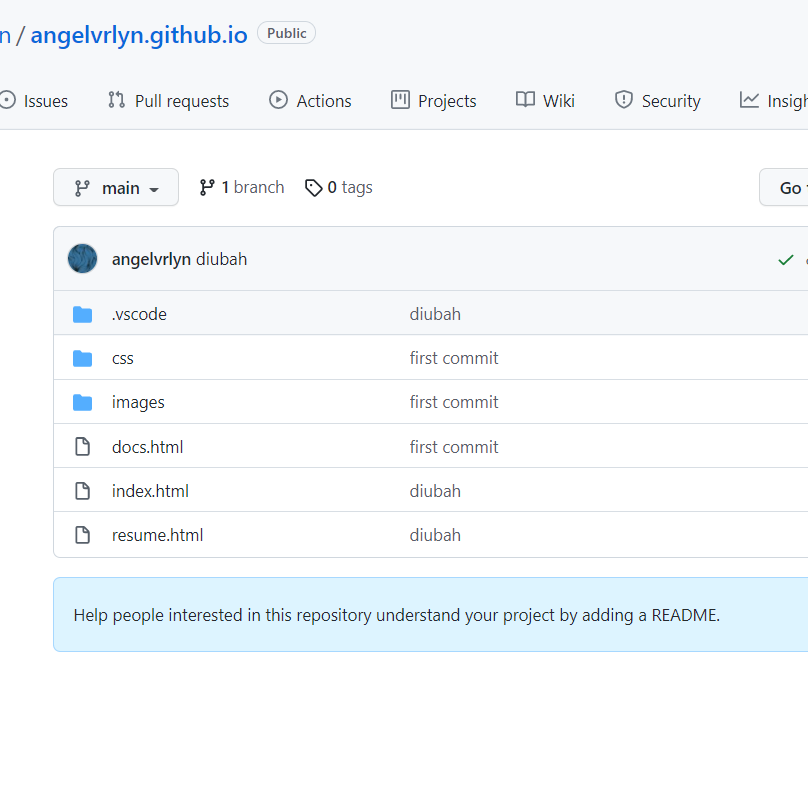
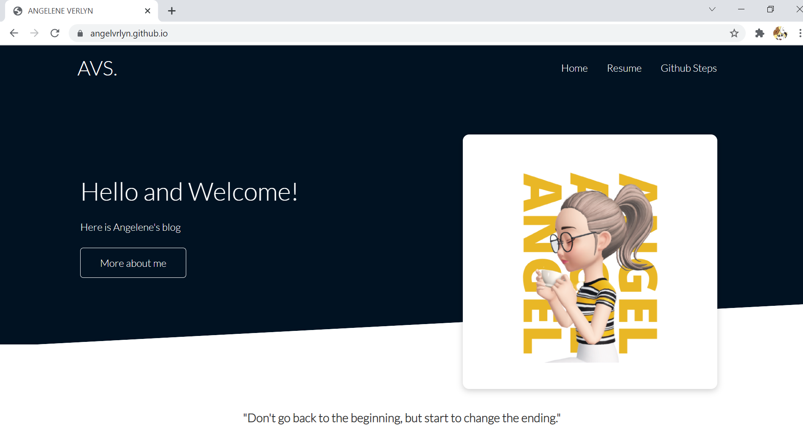

Menuju profil github masing-masing.
Kemudian klik ikon '+' dan pilih New Repository.
Repository dibuat dengan username pribadi seperti angelvrlyn.github.io

2. Membuka folder project website dari repository lokal
Menuju ke folder project website berada melalui command prompt.
setelah itu lakukan git init untuk membuat local repository, kemudian lakukan git add
untuk memasukkan semua file ke repository.

3. Push file repository ke Github
Ketikkan git remote add origin dan tambahkan link repository di github.
Kemudian ketik git push -u origin main untuk dikirimkan ke repository Github.

4. Project berhasil dikirimkan ke Github
Bisa dicek di repository github yang sudah dibuat bahwa file project sudah berhasil dimasukkan.
Namun, apabila link belum bisa diakses, maka klik settings di bawah repository name, kemudian menuju ke pages.
Lalu ubah source ke main/master.

5. Github Pages sudah bisa diakses
Url username.github.io (misal angelvrlyn.github.io) bisa coba dimasukkan ke browser.
Halaman blog yang dibuat sudah dapat dilihat dan diakses. Namun, halaman blog itu bisa diakses apabila
terdapat file html.